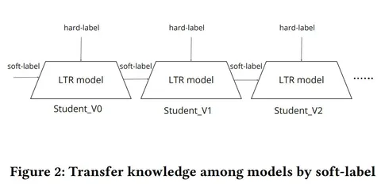

Свежая статья от Airbnb о том, как совместить дистилляцию и мультитаск-обучение. Задача ранжирования заключается не только в предсказании конверсии, но и её исхода. Например, человек может вернуть заказ или оставить отзыв. Также он может обратиться в сервис, если возникнут проблемы. Это важно в контексте долгосрочного роста платформы.
По словам авторов, традиционные подходы к ранжированию страдают из-за дисбаланса данных, которых для разных задач может быть разное количество — много для CTR и конверсий, но мало для возвратов, обращений в сервис и т. д. Учесть эти факторы сложно.
Решение — end-to-end multi-objective, совмещенный с дистилляцией. Важно, чтобы при этом инференс и обучение не занимали слишком много времени. Модели объединяют через дистилляцию, после чего добавляют механизм самодистилляции — он даёт лучшую воспроизводимость и помогает побороть cold start при переобучении. Так у авторов получилось решать ad-hoc бизнес-задачи, связанные с недифференцированными функционалами.
Лоссы с разных подзадач объединяют с помощью скаляризации. Отдельные лейблы, возникающие из-за того, что задач несколько, агрегируются в один, т. н. софт-лейбл. При такой постановке происходит шеринг нижних слоев (возможно, не только их). Это оказывает положительное влияние на задачи с разреженными данными, но может работать плохо, если между задачами слабая корреляция — так часто бывает в маркетплейсах. Даже несмотря на это, по словам авторов, выгода от шеринга есть.
Подбирать веса, с которыми суммируются лоссы, при таком подходе дорого, плюс есть риск переобучения. Если подбирать веса каждый раз, когда обновляется какая-то модель — затраты вырастут. Избавиться от онлайн-тюнинга весов и сбалансировать обучение на цели с разным количеством данных помогает дистилляция, а дальнейшая самодистилляция закрепляет и усиливает эффект. Исследователи получили рост метрики nDCG на 1,1% в офлайн-экспериментах и +0,37% бронирований (CVR) в A/B-тестах.
@RecSysChannel
Разбор подготовил
